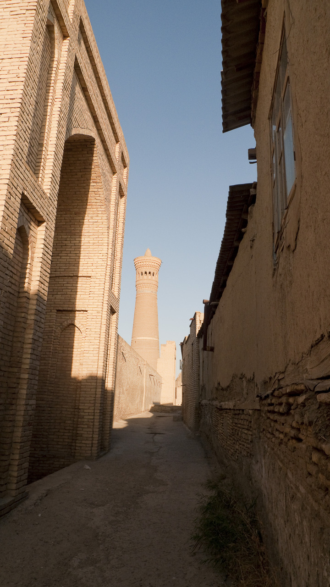
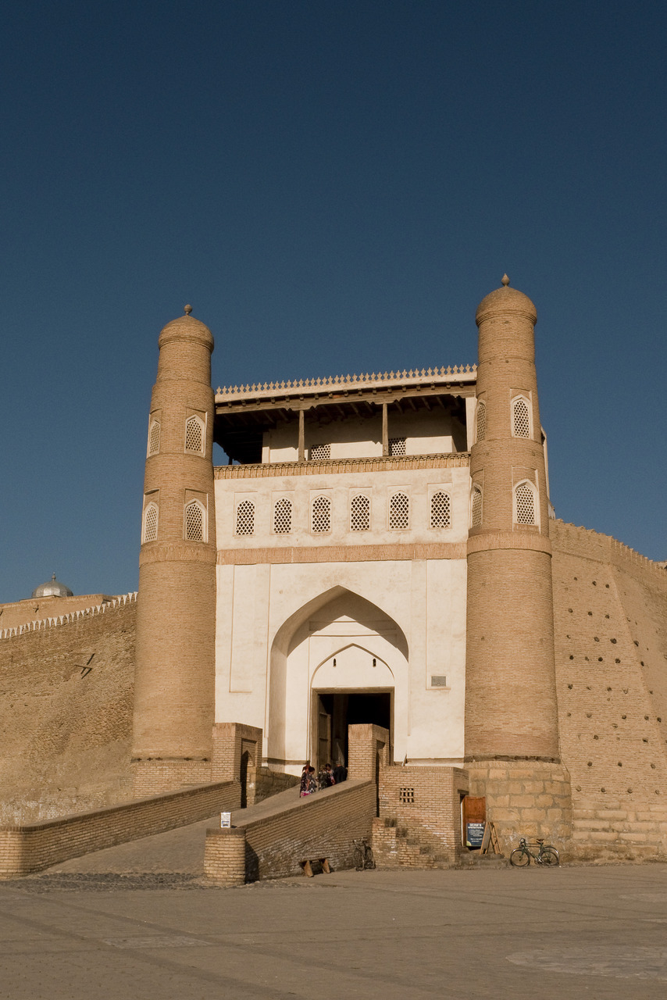
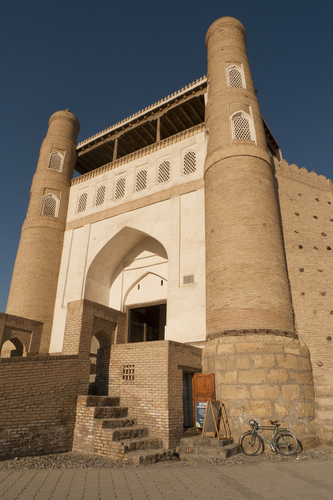
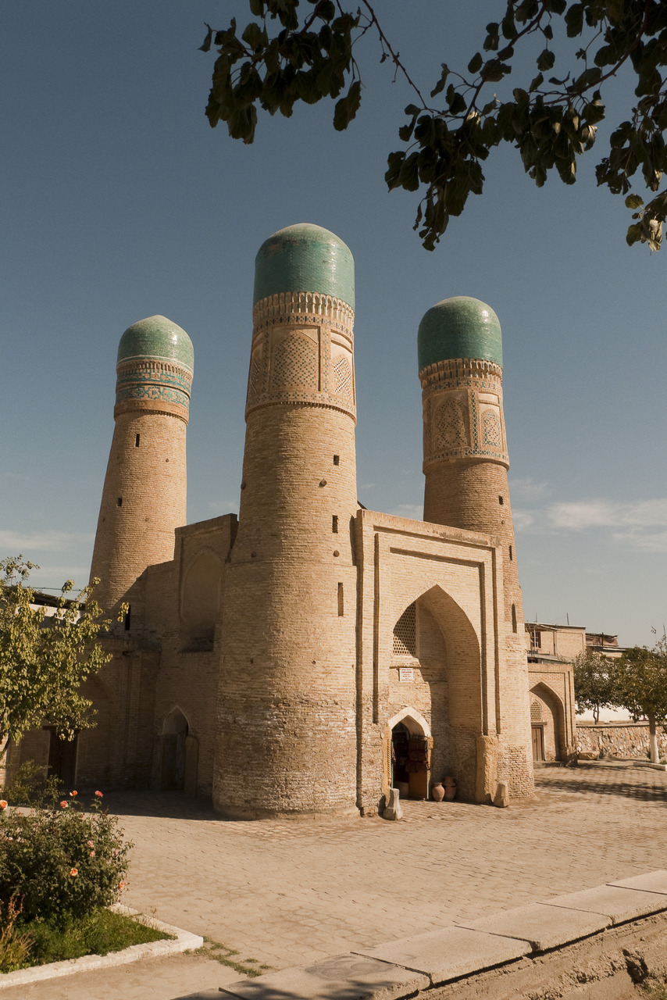
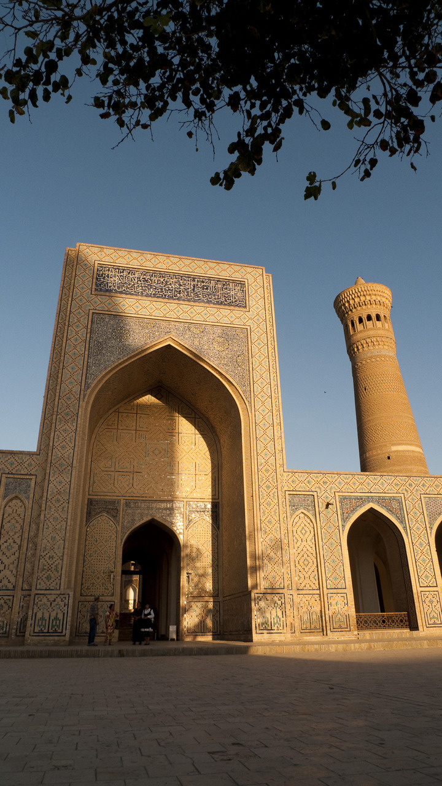
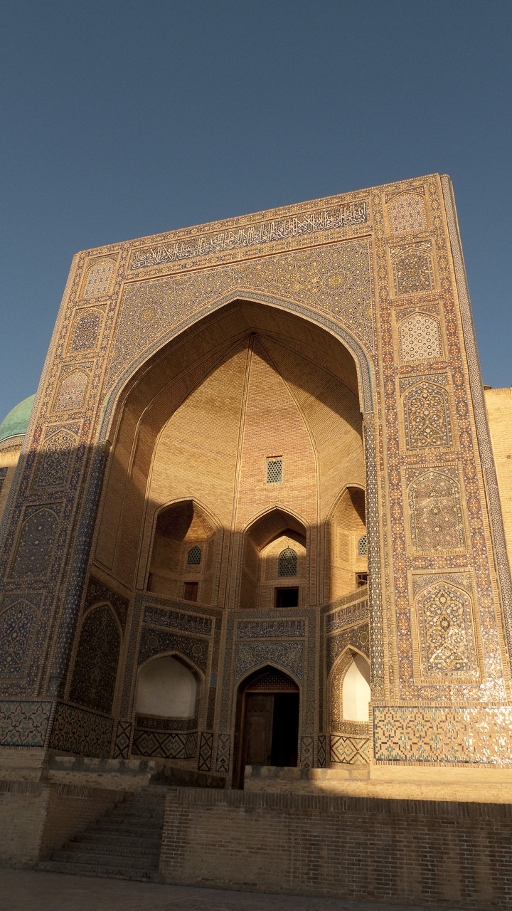
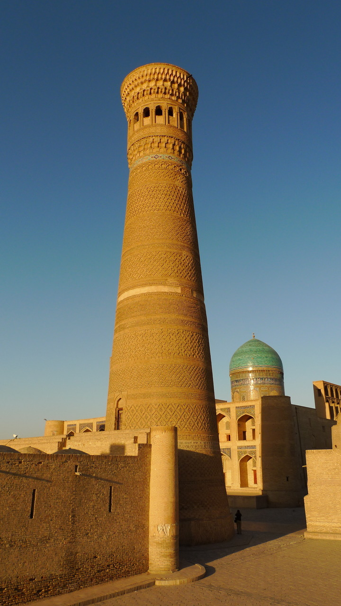
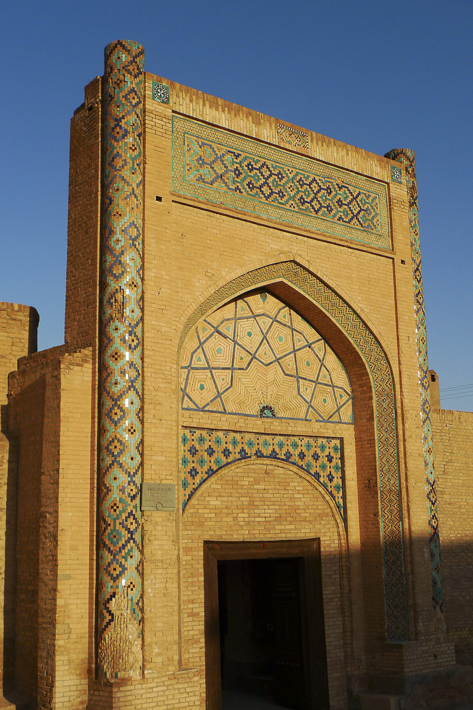

Sat, 18 Sep 2010 18:13:00 · Bukhara · Uzbekistan · Travel · City · silkroad · architecture
random snapshot of bukhara uzbekistan








Random snapshot of Bukhara, Uzbekistan.
~ (Uzbek: Buxoro/Бухоро; Persian: بُخارا; Russian: Бухара).
–
These photos were taken when I went for a trip to Uzbekistan back in October 2009. I went from south starting in the capital city, Tashkent, then taking the train to Samarkand, Bukhara, went North to the old desert and pirates town, Khiva, then continuing to Nukus, Moynag and the Aral sea in Karakalpakstan Republic, north of Uzbekistan near the Kazakhstan border.
Such an amazing country rich with history and architecture wonders that dated back as far as the late 9th century. Read more about the history of Bukhara here and here.
I still have tons of pix but I’ll post some more latta… (^.^)